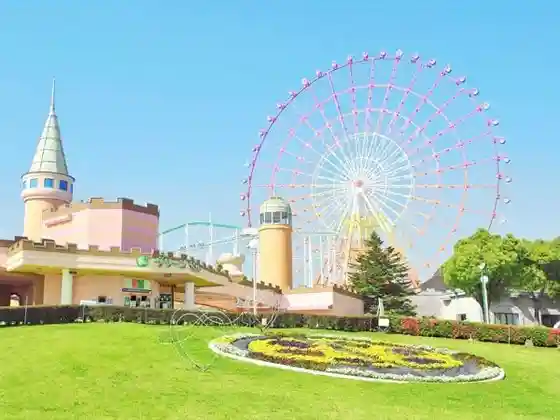
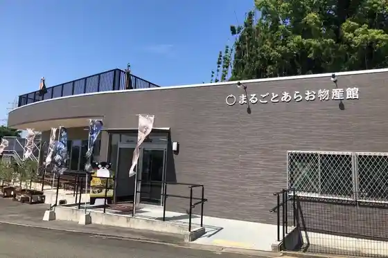
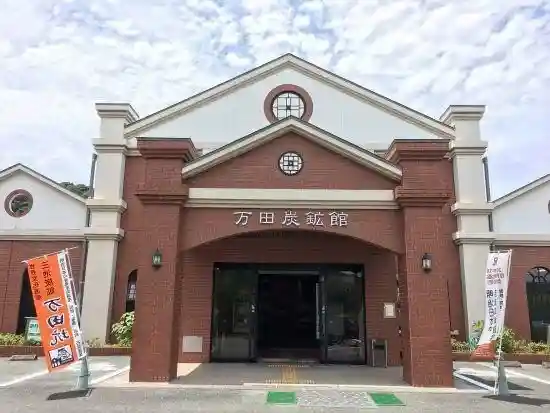

Guriin Land
Arao, Kumamoto · 0968-66-1112 · Official / source link

Matsunaga Nihonto Tsurugi Tanren Tokoro
Arao, Kumamoto · 0968-68-2250 · Official / source link
Marugotoarao Bussan Kan
Arao, Kumamoto · 0968-57-9960 · Official / source link

Shi Yama Shrine
Arao, Kumamoto · 0968-62-1390 · Official / source link
Manda Tanko Kan
Arao, Kumamoto · 0968-64-1300 · Official / source link

Miyazaki Kyodai no Seika
Arao, Kumamoto · 0968-63-2595 · Official / source link
Shodai Mizuho Kama
Arao, Kumamoto · 0968-66-2380 · Official / source link
Sho Tai Yaki Sueyasu Kama
Arao, Kumamoto · 0968-68-0058 · Official / source link
Shodai Yaki Taro Kama
Arao, Kumamoto · 0968-68-4817 · Official / source link
Shodai Yaki Chuhei Kama
Arao, Kumamoto · 0968-68-7326 · Official / source link
Shodai Motoya Chihiro Kama
Arao, Kumamoto · 0968-68-6459 · Official / source link
Iwamoto Hashi
Arao, Kumamoto · 0968-63-1421 · Official / source link
Manda Ko
Arao, Kumamoto · 0968-57-9155 · Official / source link
Shodai Yaki Fumoto Kama
Arao, Kumamoto · 0968-68-0456 · Official / source link
Arao Higata
Arao, Kumamoto · 0968-57-7444 · Official / source link
no Kaisambutsu Chokubai Tokoro Ariake Village
Arao, Kumamoto · 0968-63-0812 · Official / source link
Omoyai City Tami Kadan
Arao, Kumamoto · 0968-57-7059 · Official / source link
Arao Ritsu Library
Arao, Kumamoto · 0968-57-7747 · Official / source link